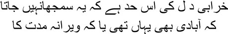
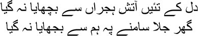
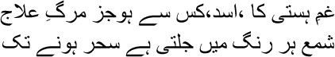
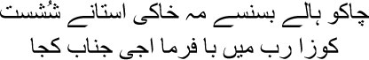
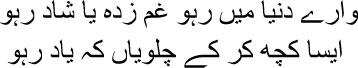

10

My heart is so bereft that I cannot tell whether
Anyone ever lived here, or whether it has long been empty
ustakhi maaf, Mirza sahib and my friends, it’s time to hear about the ill-fated Manto. Words are bubbling up within me, they will not be held back. Whenever I spoke, Ismat would only laugh and suck on an ice cube—how she loved eating ice—and I would just keep talking, talking like a mad man. Shafia Begum would show up from time to time to cover my mouth with her hand and giggle. I know they couldn’t tolerate me speaking for any length of time, I swore all the time, I couldn’t talk without adding a ‘bastard’ before and after every sentence; what could I do, just like Mirza sahib, my life too had passed on the streets, in tea shops and coffee houses; I had had no one besides my mother to look after me.
There’s nothing much to say about my father, Mirza sahib. He was an important person, a government official in Samrala in Ludhiana. He had married not once but twice. I was his second wife’s son. He never even spared me a glance. All my games and mischief were with my mother, whom I used to address as ‘bibijaan’. And there was my blood sister Iqbal. My father was like a shadow of a djinn, Mirza sahib, a shadow that I could not escape all my life. Much later, I was startled when I read Kafka’s short story ‘Judgement’. In this story too there was a father, a father like a demon, who caused his own son to jump into a river and commit suicide. In all my stories one character or another appeared like a demonic father, Mirza sahib, and I wanted to kill him off.
My father Maulvi Ghulam Hasan had his three sons by his first wife educated properly. He sent them abroad and made sure that they were well settled. But as for this Manto, he was turned loose on the streets—get out, you swine, wander around like a stray dog, eat the scraps and bones left behind by people. Muhammad Hasan, Sayeed Hasan, Saleem Hasan—his three sons by his first wife—were in England, Mirza sahib. And I was on Samrala’s roads, doing what? Watching performing monkeys and people walking through flames. I gave up studies after my matriculation—who was going to pay for higher studies? After all, Maulvi Ghulam Hasan had to ensure that his three sons in England became important people. What else was there for me to do, Mirza sahib? So one day I entered a drinking dive. The police beat me all the way into jail. I was even released a few days later, I have no idea how. I began to drink regularly after this. That was how I started stealing money from Bibijaan’s box. I would sleep after drinking, and dream in my sleep; do you know who appeared in my dreams? Maulvi Ghulam Hasan, the son of a bitch. I would throw rocks at him, fling shit and mud, and still the man would laugh at the top of his voice, besharam aadmi, that was how shameless he was. He was Khabish, Mirza sahib, nothing but the evil spirit of my life. Do you know how he’d look at me? As though I was a cockroach which had just scurried out of a drain and into the room. Do you know what he’d say to my mother? ‘Why do you love this loafer so much, bibi, he should actually be tried in court.’
Trials, yes, my entire life passed in trials, Mirza sahib. I had to stand on trial over and over again simply for the stories I wrote. From childhood, a coil of fire closed in on me. Do you remember Mir sahib’s sher, Mirza sahib?

I couldn’t save my heart from the heat of separation
I saw my home burn but I couldn’t put out the fire
I had passed through just such a blaze in my childhood. Ever since then, Mirza sahib, I became a resident of fire. Or would you rather call it an aag ka darya, a river of flames? Whatever you’d like to call it, I spent forty-three years roasting in this blaze. Shafia Begum would say, ‘What have you got by burning away this way, Manto sahib?
— Qisse, Begum. Stories.
— Stories about whom?
— About them, there they are, standing across the road, can’t you see them? They’re hidden in the spirals of smoke.
— Who?
— Manto’s spirits.
Let me tell the story of the fire first, Mirza sahib. Let me tell you, my brothers, it was Manto—Saadat Hasan had died long ago—who walked through fire. That’s the truth, without a speck of falsehood in it. Manto doesn’t know falsehoods, never knew them; that was why they dragged him to court again and again. When did Manto ever learn to write, questioned the big shots of literature. The communists didn’t spare him either. That bloody Manto, that son of a bitch, spreading garbage masquerading as art. The very people who claimed to be my friends were the ones who laughed at me, saying I was a cynic, a reactionary. Apparently I even stole cigarettes from the pockets of dead people. I had nowhere to go, Mirza sahib, except the fire through which I walked as a child. You wrote such a long time ago:

What medicine besides death for the agony of living, Asad?
The lamp must burn in different hues till dawn
Let’s say, if I was born in 1918—provided of course Maulvi Ghulam Hasan acknowledges this—then I was a cur of ten or twelve at the time. None of you knows this, but that year Master Khuda Buksh had created a sensation in London’s Piccadilly Circus, driving a car blindfolded. What acclaim he received! As though we had become the goddamned masters of the world. Then, you know what, something happened. It was like a message from God. You know, Mirza sahib, a single incident can change life like the ocean on a full moon night. Like Begum Falak Ara in your case. I know you will never talk about her again; it was you who taught me what ishq is. It was you for whom Hafiz sahib had written:

We came together once, the heady memories
have vanished now
The enchantment and desire have dwindled on their own
Yes, some of these things have to be buried in the deepest shrine within the heart, which is like a place of pilgrimage, a heaven inside one’s own body. That’s where I buried Ismat—how she loved sucking ice. There was no Shafia Begum in this dargah of desire. What if there wasn’t? What could I do about it, Mirza sahib? We cannot decide who will be admitted and who will be turned away from our own jannat and jahannum, can we? Al-Fatah decides for us. You accept that, don’t you?
Pardon this impoverished man, my brothers. Manto keeps disappearing from his own stories. This was my nature. If you had read my stories, you’d have realized that Manto kept giving everyone the slip; he was perpetually on the run, like the soul of an infidel. There was no option. Saadat Hasan could never confront Manto. Saadat Hasan was full of affectations—such elegance, the clothes must be just so, anything but Lahori shoes was out of the question, he had to possess at least a dozen pairs of sandals from the Karnal Boot Shop in Anarkali bazaar; there was no end to his fancies and demands. And Manto would grab him by his ear, shake him, and say, you fucking son of a bitch, you think you’re a fucking aristocrat, do you even know the fate of what you’re writing? They will blindfold you and gag you and throw you into a pit. All of Hindustan will reek with the stench of your stories. You bastard, you swine, you dare write Thanda Gosht? Is there no limit to your defiance of our religion? Have you heard what they say? All you write about are relationships of the flesh between men and women, is there anything besides red light areas in your stories? I accept it, Mirza sahib, there really wasn’t anything else; there was murder, there was rape, there was necrophilia, there were strings of profanities—and behind all these images were a few specific years in time—-years swept away by blood—1946, 1947, 1948—there was No Man’s Land, the area between the two countries where Toba Tek Singh died. None of you has heard of Toba Tek Singh. How could you have heard of him? He was nothing but a lunatic.
No, don’t panic, my brothers, the story of the fire will begin now. I’m not going to spin a yarn about Toba Tek Singh. But you know what, people have tried to understand Manto in different ways—who was this son of a bitch, really?—was he a lunatic, or a maniac, or a mental patient, or an angel? I wanted to piss on this attempt to understand everything. How would you understand, you bloody fools, did you ever see the sunset the way I did? How would you understand, then, why the first thing I would look for in a woman was her feet? So give up your attempts; if you must discover Manto, read his stories—all those men and women you see, on the streets, in the slums, at the whorehouses, in the movie studios of Bombay—you might just find Manto among them. Are these stories or shit, they would ask. For heaven’s sake, if you can’t understand the times we live in, read my stories, and if you cannot bear to read them you’ll know that you cannot bear to live in these times. But what’s the use of saying all this? They singed Manto with flaming rods; what kind of a writer is he anyway, he’s just a pornographer, he deals only with the seamy side of life. Yet, whenever I started a new story, I never forgot to write the number 786 and Bismillah’s name before beginning. All this was my reward for walking on burning coal, my brothers.
You remember the exploits of Master Khuda Buksh, don’t you? The one who had demonstrated the art of driving blindfolded in London’s Trafalgar Square. After him, a performer named Allarakha appeared in Amritsar, claiming to be Khuda Buksh’s teacher. Digging a hole in the road, he lit some coal in the pit he had made, and then proceeded to walk on the fiery lumps. The crowds swelled every day to watch Allarakha sahib’s magic. Many stories, many legends, began to spread about him. I used to sit there quietly, watching him. How does a man walk on burning coal? After he had walked on them, he would show us the soles of his feet to prove there were no blisters. I had heard the story of Al-Hallaj from Bibijaan. Once he took a lot of people across the desert to Mecca. The travellers were weary with hunger. Can we not get some dates to eat, pir sahib, they asked Hallaj.
Smiling, Hallaj said, ‘You want to eat dates?’
— Yes, we’re starving. We cannot walk any more.
— Wait. Hallaj made a gesture in the air with his arm, whereupon a bowl of dates appeared in his hand.
The journey was resumed, and once again they collapsed in the desert with hunger. That was another era, my brothers. Wasn’t it, Mirza sahib? Life meant nothing but crossing one desert after another. And the nights would pass in the company of the stars in the desert sky. It was the road of the pir, of the devout, of the Hazrat. We moved away from that road towards this hell of ours such a long time ago, to this cacophony, this torment, this stench of rotting flesh.
This time they wanted halwa to assuage their hunger.
Smiling, Hallaj asked, is that all you need, or do you want something else too?
— No, huzoor, that’s all we need to continue on our journey.
— That’s true. How will you get closer to the true path, the Din, unless you survive physically? Saying this, he gestured with his arm in the air once again, making the halwa appear. The desert was suffused with its aroma. After everyone had eaten, one of them said, ‘But halwa of this quality isn’t available anywhere except Baghdad, pir sahib.’
Smiling, Hallaj said, ‘To the Lord, the desert and Baghdad are one and the same.’
— And where did you get the dates?
After a few moments of silence, Hallaj stood upright, like a tree. ‘Shake me,’ he said.
— Why, pir sahib?
— Try it. Hallaj smiled.
All of them began to shake Hallaj, and he turned into a tree, ripe dates falling to earth from his body. The dark brown dates glittered like jewels in the sunlight.
I was thinking of this story about Mansur Hallaj while watching Allarakha sahib’s magic. This was pure magic then, Mirza sahib, not sleight of hand. If one man can become a palm tree, why can’t another walk on burning coal? How many skills does a man come to earth with? But how little of these powers is actually used? How much of them do we get to see? Why don’t we see them, Mirza sahib? Do you remember Mir sahib’s sher:

Live amongst people. You will find joy, sorrows too
Do something so that people cannot forget you easily
Live in this world. Don’t try to understand it, my brothers. Live in this world as though it is a book. Just write down everything that happens.
Let me tell you what happened after this, for I can tell your faces are turning gloomy.
One day, Allarakha sahib suddenly said, ‘Do all of you believe in God?’
— Yes, janab, came the crowd’s reply in a chorus.
— And in me?
— Huzoor is a prophet, everyone responded.
Allarakha sahib burst into laughter. —A prophet? Have you seen a prophet? Do you know who a real prophet is?
— Tell us, huzoor.
— Then let me tell you a story. Have you ever heard of Abu Sayeed Abul-Khayeer? A Sufi saint from Khorasan. All this happened twelve or thirteen hundred years ago. Do you know what the world was like back then?
— What was it like, huzoor?
— A hundred different winds would blow. And each of them would turn people mad in different ways. Allarakha sahib laughed. —So Pir Abu Sayeed was on his way through the forest one day with a disciple of his. The forest was infested with poisonous snakes. Suddenly one such snake wound itself around Abu Sayeed’s leg. The disciple froze with fear. ‘Don’t be afraid,’ Abu Sayeed told him. ‘The snake is here to offer me its sajda, to worship me. Would you like it to worship you too?’
— Certainly. The disciple brightened.
— It will not worship you till you cannot forget yourself.
Now this was a true prophet, friends. He had no possessions of his own. He was sent to this world only to spread the word of God. Now, it’s time for each of you to be tested.
Tested for what? What did Allarakha sahib want to test? The crowd exchanged glances.
— You say you believe in God. In me too. Those who have faith, come forward and walk through the fire with me.
At this the crowds began to thin. Some crept away surreptitiously, others ran away after one look at the flames. And then, I couldn’t stay still anymore Mirza sahib, I went forward towards Allarakha sahib. Taking my shoes and socks off, I hitched my kurta up.
Looking at me in surprise, Allarakha sahib asked, ‘Do you want to walk with me, son?’
— Yes.
— Then come along. He tugged at my hand. —Recite the Kalma. La illaha illallaho Muhammadur rasullullah.
— La illaha illallaho Muhammadur rasullullah.
As I recited the Kalma, my body began to feel as light as the air. Holding Allarakha sahib’s hand, I entered the circle of fire, Mirza sahib. I walked behind him on the burning lumps of coal. Yes, Mirza sahib, I had found myself for the first time. On my own path, beyond my father’s threats, beyond my highly educated stepbrothers’ disdain, as I walked behind Allarakha sahib across the circle of fire. No, I didn’t get blisters on my feet, Mirza sahib.
To tell the truth, I drifted through the days like a vagrant. I hated studying in school. But it was in school that books entered my blood. Some of us formed a troupe to stage a play by Agha Zafar Kashmiri. One day my father broke the harmonium, the tablas—everything. No more of this, he decreed. And the more stubbornly determined I grew. Abandoning my textbooks, I would read romances; they were written for adults, no one of my age read them. My wild ways earned me the nickname of Tommy in school. I passed the matriculation examination in the third division on my third attempt, and you know the funniest thing—I failed in Urdu. Ha ha ha, just imagine, Mirza sahib, I failed in Urdu.
Those were the days, my brothers. Studies were abandoned once and for all, and I began to frequent the gambling dens. Denu and Fazlu ran their den in Karta Jamal Singh. I used to play flush. Though an apprentice initially, I learnt the intricacies quickly enough. All my time was spent gambling. I didn’t keep count of how long things went on this way. But one day, you know, I felt immensely bored of it all. It was tedious to keep betting on oneself all the time. Was I no one, then? Was I just an object that could be betted on? Very well then, Manto, I decided, let’s walk a different road now. Life doesn’t offer just the one road. Why not try a different one now? But what would I do instead? If I gave up the gambling den, where could I go? The streets took me in, I wandered from one road to another, from one lane to another, in a daze of dreams I walked, I became friendly with the dogs, I used to sit with them and pet them, they would lick me back. I wandered around the cemeteries, I heard hundreds of stories from fakirs, Mirza sahib; those stories are lost forever, for I couldn’t write them down.
The Jallianwalla Bagh massacre of 1919 had taken place already. I was only seven at the time. But I saw Punjab rising in revolt, there were parades and slogans on the streets of Amritsar. Bhagat Singh was my ideal then. I had a photograph of him on my desk. During my days of wandering around the streets, I wondered as I sat beneath a tree in Jallianwallah Bagh whether the world as we knew it could be destroyed in a way that would prevent the Tommies from firing indiscriminately at us ever again. Several times I even thought of making bombs, you know, Mirza sahib. I would fucking blow Amritsar apart, force the white swine to leave the country. I would say all this to Bala, to Ashiq, to Fakir Husain and Captain Wahid and Gyani Arur Singh. They would laugh their guts out. All friends of mine. Their advice was … relax, enjoy yourself, to hell with Amritsar. We would smoke hashish in Aziz’s restaurant. The hashish fumes were the perfect accompaniment to Aziz’s kebabs. Ashiq was a photograper, Fakir wrote poetry and Gyani Arur Singh was a dentist. I no longer remember what the Captain did. When he was stoned on hashish Ashiq would sing like Rafiq Ghaznavi. And Anwar, who was an artist, would just go ‘Wah! Wah!’ at the music. In Aziz’s darkened restaurant Anwar himself would sing sometimes, ‘E ishq kahin le chal. Take me away somewhere, o love.’ He had turned Akhtar Sherani’s poetry into songs. I wonder which grave Aziz’s restaurant lies in now.